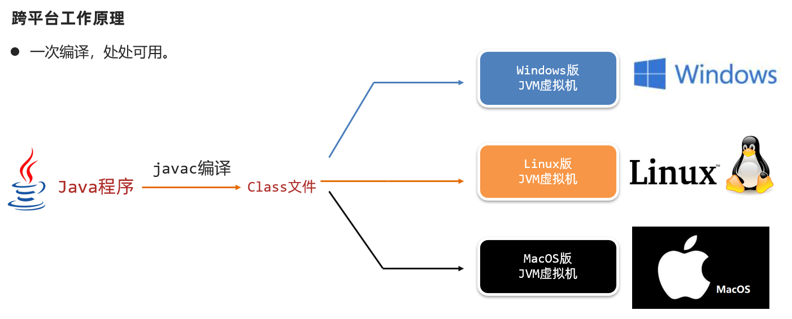
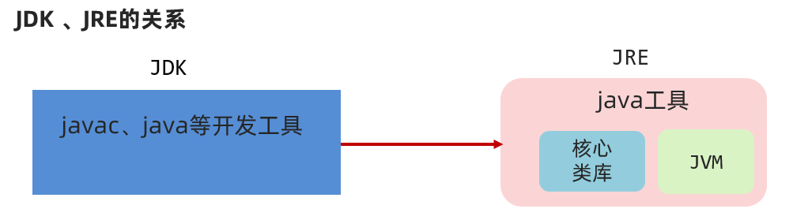

01-JAVA语法基础1
本文最后更新于：2022年8月29日 上午
本文是黑马程序员的Java入门基础视频教程的配套官方笔记，仅供学习使用
day01 - java基础语法
1. Java概述
1.1 Java语言发展史（了解）
语言：人与人交流沟通的表达方式
计算机语言：人与计算机之间进行信息交流沟通的一种特殊语言
Java语言是美国Sun公司（Stanford University Network）在1995年推出的计算机语言
Java之父：詹姆斯·高斯林（James Gosling）
2009年，Sun公司被甲骨文公司收购，所以我们现在访问oracle官网即可：https://www.oracle.com
当前，我们课程使用的JDK版本：11.0
1.2 Java语言跨平台原理（理解）
Java程序并非是直接运行的，Java编译器将Java源程序编译成与平台无关的字节码文件(class文件)，然后由Java虚拟机（JVM）对字节码文件解释执行。所以在不同的操作系统下，只需安装不同的Java虚拟机即可实现java程序的跨平台。

1.3 JRE和JDK（记忆）

JVM（Java Virtual Machine），Java虚拟机
JRE（Java Runtime Environment），Java运行环境，包含了JVM和Java的核心类库（Java API）
JDK（Java Development Kit）称为Java开发工具，包含了JRE和开发工具
总结：我们只需安装JDK即可，它包含了java的运行环境和虚拟机。
1.4 JDK的下载和安装（应用）
1.4.1 下载
通过官方网站获取JDK
注意：针对不同的操作系统，需要下载对应版本的JDK。
具体下载步骤请参见《JDK下载及安装说明文档》
1.4.2 安装
傻瓜式安装，下一步即可。但默认的安装路径是在C:Files下，为方便统一管理建议修改安装路径，将与开发相关的软件都安装到一个目录下，例如：E:。
注意：安装路径不要包含中文或者空格等特殊字符（使用纯英文目录）。
具体安装步骤请参见《JDK下载及安装说明文档》
1.4.3 JDK的安装目录介绍
| 目录名称 | 说明 |
|---|---|
| bin | 该路径下存放了JDK的各种工具命令。javac和java就放在这个目录。 |
| conf | 该路径下存放了JDK的相关配置文件。 |
| include | 该路径下存放了一些平台特定的头文件。 |
| jmods | 该路径下存放了JDK的各种模块。 |
| legal | 该路径下存放了JDK各模块的授权文档。 |
| lib | 该路径下存放了JDK工具的一些补充JAR包。 |
2. 入门程序HelloWorld
2.1 常用DOS命令（应用）
在接触集成开发环境之前，我们需要使用命令行窗口对java程序进行编译和运行，所以需要知道一些常用DOS命令。
1、打开命令行窗口的方式：win + r打开运行窗口，输入cmd，回车。
2、常用命令及其作用
| 操作 | 说明 |
|---|---|
| 盘符名称: | 盘符切换。E:回车，表示切换到E盘。 |
| dir | 查看当前路径下的内容。 |
| cd 目录 | 进入单级目录。cd itheima |
| cd .. | 回退到上一级目录。 |
| cd 目录1... | 进入多级目录。cd itheima |
| cd \ | 回退到盘符目录。 |
| cls | 清屏。 |
| exit | 退出命令提示符窗口。 |
2.2 Path环境变量的配置（应用）
2.2.1 为什么配置环境变量
开发Java程序，需要使用JDK提供的开发工具（比如javac.exe、java.exe等命令），而这些工具在JDK的安装目录的bin目录下，如果不配置环境变量，那么这些命令只可以在该目录下执行。我们不可能把所有的java文件都放到JDK的bin目录下，所以配置环境变量的作用就是可以使bin目录下的java相关命令可以在任意目录下使用。
注意：目前较新的JDK安装时会自动配置javac、java命令的路径到Path环境变量中去 ，所以javac、java可以直接使用。
但是以前下载的老版本的JDK是没有自动配置的，此时必需要自己配置Path环境变量。
①JAVA_HOME：告诉操作系统JDK安装在了哪个位置（未来其他技术要通过这个找JDK）

②Path：告诉操作系统JDK提供的javac(编译)、java(执行)命令安装到了哪个位置

注意：新版本的JDK只是自动配置了Path，没有自动配置JAVA_HOME。
2.3 HelloWorld案例（应用）
HelloWorld案例是指在计算机屏幕上输出“HelloWorld”这行文字。各种计算机语言都习惯使用该案例作为第一个演示案例。
2.3.1 Java程序开发运行流程
开发Java程序，需要三个步骤：编写程序，编译程序，运行程序。
2.3.2 HelloWorld案例的编写
1、新建文本文档文件，修改名称为HelloWorld.java。
2、用记事本打开HelloWorld.java文件，输写程序内容。
1 | |
2.3.3 HelloWorld案例的编译和运行
存文件，打开命令行窗口，将目录切换至java文件所在目录，编译java文件生成class文件，运行class文件。
编译：javac 文件名.java
范例：javac HelloWorld.java
执行：java 类名
范例：java HelloWorld
2.4 HelloWorld案例常见问题（理解）
2.4.1 BUG
在电脑系统或程序中，隐藏着的一些未被发现的缺陷或问题统称为bug（漏洞）。
2.4.2 BUG的解决
1、具备识别BUG的能力：多看
2、具备分析BUG的能力：多思考，多查资料
3、具备解决BUG的能力：多尝试，多总结
2.4.3 HelloWorld案例常见问题
1、非法字符问题。Java中的符号都是英文格式的。
2、大小写问题。Java语言对大小写敏感（区分大小写）。
3、在系统中显示文件的扩展名，避免出现HelloWorld.java.txt文件。
4、编译命令后的java文件名需要带文件后缀.java
5、运行命令后的class文件名（类名）不带文件后缀.class
...
3、IDEA安装使用
参见“IDEA安装详解.pdf”
4. java基础语法
4.1 注释（理解）
注释是对代码的解释和说明文字，可以提高程序的可读性，因此在程序中添加必要的注释文字十分重要。Java中的注释分为三种：
单行注释。单行注释的格式是使用//，从//开始至本行结尾的文字将作为注释文字。
1 | |
多行注释。多行注释的格式是使用/* 和 */将一段较长的注释括起来。
1 | |
文档注释。文档注释以/**开始，以*/结束。（以后讲）
4.2 字面量（应用）
作用：告诉程序员，数据在程序中的书写格式。
| 字面量类型 | 说明 | 程序中的写法 |
|---|---|---|
| 整数 | 不带小数的数字 | 666，-88 |
| 小数 | 带小数的数字 | 13.14，-5.21 |
| 字符 | 必须使用单引号，有且仅能一个字符 | ‘A’，‘0’， ‘我’ |
| 字符串 | 必须使用双引号，内容可有可无 | “HelloWorld”，“黑马程序员” |
| 布尔值 | 布尔值，表示真假，只有两个值：true，false | true 、false |
| 空值 | 一个特殊的值，空值 | 值是：null |
1 | |
4.3 数据类型（记忆、应用）
3.4.1 计算机存储单元
l计算机底层都是一些数字电路(理解成开关)，用开表示0、关表示1，这些01的形式就是二进制。
数据在计算机底层都是采用二进制存储的，l在计算机中认为一个开关表示的0|1称为1位（b），每8位称为一个字节（B）， 所以1B=8b
字节是计算机中数据的最小单位。
我们知道计算机是可以用来存储数据的，但是无论是内存还是硬盘，计算机存储设备的最小信息单元叫“位（bit）”，我们又称之为“比特位”，通常用小写的字母”b”表示。而计算机中最基本的存储单元叫“字节（byte）”，
通常用大写字母”B”表示，字节是由连续的8个位组成。
除了字节外还有一些常用的存储单位，其换算单位如下：
1B（字节） = 8bit
1KB = 1024B
1MB = 1024KB
1GB = 1024MB
1TB = 1024GB
3.4.2 Java中的数据类型
Java是一个强类型语言，Java中的数据必须明确数据类型。在Java中的数据类型包括基本数据类型和引用数据类型两种。
Java中的基本数据类型：
| 数据类型 | 关键字 | 内存占用 | 取值范围 |
|---|---|---|---|
| 整数 | byte | 1 | 负的2的7次方 ~ 2的7次方-1(-128~127) |
| short | 2 | 负的2的15次方 ~ 2的15次方-1(-32768~32767) | |
| int | 4 | 负的2的31次方 ~ 2的31次方-1 | |
| long | 8 | 负的2的63次方 ~ 2的63次方-1 | |
| 浮点数 | float | 4 | 1.401298e-45 ~ 3.402823e+38 |
| double | 8 | 4.9000000e-324 ~ 1.797693e+308 | |
| 字符 | char | 2 | 0-65535 |
| 布尔 | boolean | 1 | true，false |
说明：
e+38表示是乘以10的38次方，同样，e-45表示乘以10的负45次方。
在java中整数默认是int类型，浮点数默认是double类型。
4.4 变量（应用）
3.5.1 变量的定义
变量：在程序运行过程中，其值可以发生改变的量。
从本质上讲，变量是内存中的一小块区域，其值可以在一定范围内变化。
变量的定义格式：
1 | |
或者
1 | |
还可以在同一行定义多个同一种数据类型的变量，中间使用逗号隔开。但不建议使用这种方式，降低程序的可读性。
1 | |
变量的使用：通过变量名访问即可。
3.5.2 使用变量时的注意事项
- 在同一对花括号中，变量名不能重复。
- 变量在使用之前，必须初始化（赋值）。
- 定义long类型的变量时，需要在整数的后面加L（大小写均可，建议大写）。因为整数默认是int类型，整数太大可能超出int范围。
- 定义float类型的变量时，需要在小数的后面加F（大小写均可，建议大写）。因为浮点数的默认类型是double， double的取值范围是大于float的，类型不兼容。
4.5 关键字、标志符（记忆、理解）
关键字
Java自己保留的一些单词，作为特殊功能的，例如：public、class、byte、short、int、long、double…
我们不能用来作为类名或者是变量名称，否则报错。
注意：关键字很多，不用刻意去记。
| abstract | assert | boolean | break | byte |
|---|---|---|---|---|
| case | catch | char | class | const |
| continue | default | do | double | else |
| enum | extends | final | finally | float |
| for | goto | if | implements | import |
| instanceof | int | interface | long | native |
| new | package | private | protected | public |
| return | strictfp | short | static | super |
| switch | synchronized | this | throw | throws |
| transient | try | void | volatile | while |
标志符
标志符就是由一些字符、符号组合起来的名称，用于给类，方法，变量等起名字的规矩。
基本要求：由数字、字母、下划线(_)和美元符($)等组成
强制要求：不能以数字开头、不能是关键字、区分大小写
基本命令规范
变量名称：满足标识符规则，建议全英文、有意义、首字母小写，满足“驼峰模式”，例如：int studyNumber = 59。
类名称： 满足标识符规则，建议全英文、有意义、首字母大写，满足“驼峰模式”，例如：HelloWorld.java。
作者水平有限，有错误请不吝指正，转载请注明出处！